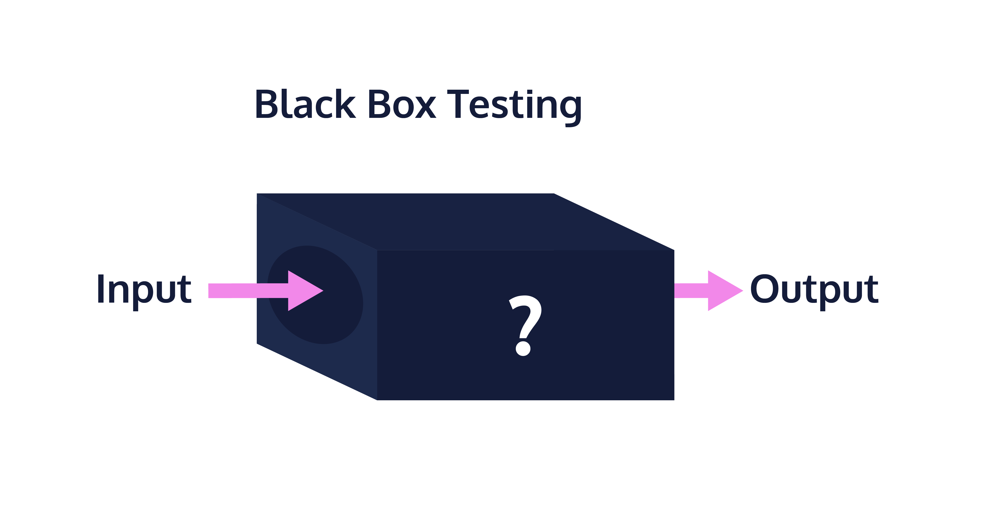

Over the summer of my sophomore year, I worked on a react web app using mainly Javascript. However I have never used it since, because the main coding languages I use as a computer engineering major are more low-level than Javascript. I learned C first when I was a freshman. From there I learned C++ for object oriented problems and hardware languages like Verilog and SystemVerilog for FPGA design. Only recently was it that I started venturing into more user-friendly coding languages like Python, and now, once again, Javascript.
My experience with Javascript so far has been quite pleasant. I haven’t had too much difficulty picking up the basics of the language due to a variety of factors. For example, the syntax of the language closely resembles a mix of C++ and Python, both of which I know decently well. Therefore, the syntax proved to be no issue during the first couple weeks of studying.
After grasping the basics, I quickly got into the ES6 Javascript functionality that I never touched in my previous brief encounter with the language. There are a few useful tools that are quite similar to Python syntax in ES6, that I believe can be used in almost every application. My favorites to learn were the array unpacking and arrow functions. In lower level languages like C, array unpacking has to be done manually, mainly using helper functions equipped with nested for loops for the higher dimension arrays. However, in ES6, the unpacking is done concisely and with a more intuitive syntax (…) than Python (*) in my opinion. For the arrow functions, I found them very useful for readability since I could minimize the amount of unnecessary variables and lines of code in my scripts.
 Figure 1: A diagram of a black box abstraction model which simplifies complicated frameworks. Source: CodeAcademy.
On that note, based on my experience with Javascript so far, I think the language is definitely a very useful programming language for software engineering. I think lower level languages that can bring the developer closer to the hardware is useful for its own set of optimization applications. However, for software engineering as a whole, I think that Javascript is very good since it brings a level of abstraction that other languages lack. By sort of “black-boxing” a lot of the type casting and memory manipulation of the language, it makes it very user friendly. In turn, the time to complete simple tasks using Javascript is greatly reduced, allowing software engineers to be really productive.
I saw the efficiency of Javascript first-hand when I was practicing athletic software engineering via sets of practice WOD’s, or workouts of the day. I found this type of active learning to be useful for two reasons. Firstly, by adding short coding assignments in between more passive learning tasks, like reading and screencasts, it helps me to solidify the knowledge in my brain right after. Normally, if I read a chapter on one concept, by the time I read the next chapter, I have forgotten everything. Using short practice WOD’s, I am able to essentially review my previous learnings by doing it actively.
The second reason I enjoy athletic software engineering methods is because it encourages daily practice. Since the tasks are short in time, it is easy to get them done, which encourages daily problems to be solved. I think this is helpful since less rest for your brain between studying allows the knowledge to be better retained.
Overall, the Javascript 1 module was enjoyable and it definitely encouraged me to use Javascript in the future.